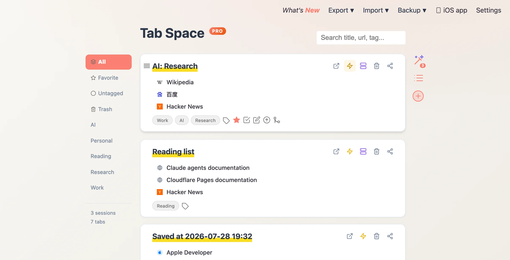

保存标签页，
释放注意力。
Tab Space 把打开的浏览器标签页保存为一个个可搜索、可加标签、自动备份并通过 iCloud 同步的会话——现在关掉满屏的杂乱，之后随时从原处继续。
Mac、iPhone 和 iPad 支持 Safari · macOS 11+ · iOS 16+
Mac 上的 Chrome、Edge 和 Firefox 121+ —— Beta，随 4.0 推出
Tab Space 把打开的浏览器标签页保存为一个个可搜索、可加标签、自动备份并通过 iCloud 同步的会话——现在关掉满屏的杂乱，之后随时从原处继续。
Mac、iPhone 和 iPad 支持 Safari · macOS 11+ · iOS 16+
Mac 上的 Chrome、Edge 和 Firefox 121+ —— Beta，随 4.0 推出
一次点击——或一个快捷键——把所有打开的标签页保存为一个命名会话并清空窗口，随时回来继续。
会话通过你自己的 iCloud 在 Mac、iPhone 和 iPad 之间同步，无需注册账号。
按自己的方式给会话加标签，再按标题、网址或标签瞬间找回任何保存过的标签页。
按小时、天、周、月智能保留的自动备份守护你保存的标签页——任何一份都能一键恢复。
会话可导出为纯文本、Markdown、HTML 或 JSON。从 OneTab 迁移？列表可直接导入。
同一套会话可在 Safari、Chrome、Microsoft Edge 和 Firefox 中使用。配套浏览器只需一次本地配对即可连接 Mac App。此功能包含在 Pro 中，目前为 Beta，将随 4.0 版本推出，尚未发布。 查看设置指南 →
Free 和 Plus 每周包含 5 次 AI 请求；订阅 Pro 可无限使用 AI、获得多浏览器支持及之后推出的 Pro 新功能。
以下定价适用于即将推出的 4.0 版本，该版本尚未发布。当前 Mac App 仍为一次性购买；在 4.0 之前购买过的用户将免费获得永久 Plus。
$0
免费下载
$9.99
一次购买，永久拥有
$1.99 / 月
或 $17.99/年，年付免费试用 7 天
页面展示美元价格，各地区以 App Store 实际定价为准。iPhone 和 iPad 将在后续版本引入会员体系，届时同一份 Pro 订阅可跨平台使用。

资料调研、旅行规划、周末阅读——每件事都是一个独立会话。置顶收藏、随手打标签，需要时按标题、网址或标签一搜即达。

自动备份按小时到月的智能计划运行，任何会话都能导出为纯文本、Markdown、HTML 或 JSON。深色模式随系统自动切换，昼夜皆宜。

保存一堆标签页后，Tab Space 可以自动拟好会话标题、补上合适的标签，你不用自己起名也能在之后找回。Free 和 Plus 每周包含 5 次 AI 请求，Pro 不限次数。4.0 版本尚未发布。
双手不离键盘：打开你的会话、清理嘈杂的窗口、把链接复制成 Markdown——这些每天都在做的标签页琐事，Tab Space 都给了快捷键。
在 Mac 前保存会话，到沙发上继续。iOS 和 iPadOS 版 Tab Space 现已上架——同样通过你自己的 iCloud 同步，无需账号。
Tab Space 把会话保存在设备上浏览器之外的原生应用数据库中，并通过你自己的 iCloud 同步。只有你主动使用 AI 时，才会发送所选会话信息进行处理。
查看隐私政策 →会自动免费获得永久 Plus，无需任何操作或订阅，并永久保留无限会话及 4.0 之前的全部功能。
Free 包含全部基础功能、最多 5 个会话和每周 5 次 AI 请求。达到会话上限后只会限制新增，绝不会删除或隐藏已有会话。
Free 和 Plus 都包含每周 5 次 AI 请求。Plus 是 $9.99 一次性购买，永久解锁无限会话和全部基础功能。Pro 包含 Plus，AI 不限次数，并支持 Safari、Chrome、Microsoft Edge 和 Firefox（Beta），以及未来 Pro 功能，月付 $1.99 或年付 $17.99；年付含 7 天免费试用。以上方案随 4.0 版本推出，该版本尚未发布。
目前 iOS 版仍为独立付费 App。后续版本引入会员体系后，同一份 Pro 订阅将跨平台通用；届时现有 iOS 购买者会自动获得 Plus。
可以。会话通过你自己的 iCloud 在 Mac、iPhone 和 iPad 之间同步，无需账号。iPhone/iPad 版 Tab Space 现已在 App Store 上架。
会话保存在设备上浏览器之外的原生应用数据库中，并通过你自己的 iCloud 同步。只有你主动使用 AI 时，才会发送所选会话信息进行处理。
多浏览器支持是 Tab Space Pro 4.0 的 Beta 功能，该版本即将推出、尚未发布。它在 Mac 上支持 Safari、Chrome、Microsoft Edge 和 Firefox 121 或更新版本。无论由哪个浏览器保存，会话都留在原生 Mac App 中。 详见多浏览器设置指南。
Mac 端要求 macOS 11 或更新版本；iPhone 和 iPad 端要求 iOS 或 iPadOS 16 或更新版本。
能。从 OneTab 导出列表后，使用 Tab Space 的"从 OneTab 导入"功能，保存的标签组会变成 Tab Space 会话。
能。会话随时可以导出为纯文本、Markdown、HTML 或 JSON，自动备份还会保留按小时、天、周、月的副本。